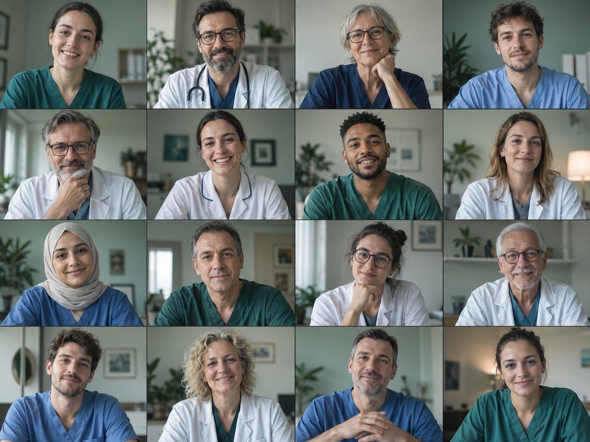

ChatGPT, ChatBots na Gestão e Prática Profissional em Saúde
ULS Baixo Alentejo · 1ª edição · 6 de outubro de 2026
ChatGPT, ChatBots para Médicos
ULS Baixo Alentejo · 1ª edição · 12 de outubro de 2026
Tópicos
- Quem somos — os formadores
- Objetivos do curso
- Como funciona: sessões, materiais e Moodle
- Avaliação e projeto final
- Cronograma
- Recursos necessários
- Apresentação dos formandos
A equipa e o curso
Formadores
Mariana Canelas Pais
Médica e Mestre em Informática Médica pela FMUP. Data Scientist Director na MTG Research and Development Lab e docente convidada na FMUP, onde lecciona os cursos DECIDES.
Ricardo Cruz-Correia
Professor associado e especialista em informática em saúde. Trabalha a integração de tecnologia na saúde e na educação, com mais de vinte seminários sobre aplicação de IA generativa.
Hélder Palheira
Enfermeiro e Mestre em Informática Médica pela FMUP-FCUP. Desenvolve soluções digitais com IA para a saúde e integra o Grupo de Trabalho de Saúde Digital e IA da Ordem dos Enfermeiros.
Sara Matias Correia
Licenciada em Relações Internacionais, especializada em tecnologias digitais e análise estratégica. Acompanha o curso na comunicação e no contributo geral.
Formadores
Daniel Rodrigues
Especialista em Informática em Saúde e formador em IA para a Saúde desde 2023. Investiga a aplicação de modelos de linguagem no ensino superior.
Jannine Nascimento
Enfermeira, doutoranda em Ciências da Saúde pela UFMG e pesquisadora visitante na Universidade do Porto. Investiga saúde digital e produção científica baseada em evidências.
Miguel Oliveira
Psicólogo especialista em Psicologia da Educação e em Psicologia do Trabalho. Coordena a Equipa de Cibersegurança da Ordem dos Psicólogos e é doutorando em Health Data Science na FMUP.
Formadores
Daniel Rodrigues
Especialista em Informática em Saúde e formador em IA para a Saúde desde 2023. Investiga a aplicação de modelos de linguagem no ensino superior.
Jannine Nascimento
Enfermeira, doutoranda em Ciências da Saúde pela UFMG e pesquisadora visitante na Universidade do Porto. Investiga saúde digital e produção científica baseada em evidências.
Miguel Oliveira
Psicólogo especialista em Psicologia da Educação e em Psicologia do Trabalho. Coordena a Equipa de Cibersegurança da Ordem dos Psicólogos e é doutorando em Health Data Science na FMUP.
Objetivos do curso
Usar ferramentas de IA generativa — ChatGPT, Claude.ai, Gemini, NotebookLM — de forma crítica, eficaz e segura na prática profissional em saúde — na clínica, na gestão e no trabalho administrativo.
- Prompt Engineering: princípios e padrões
- Context Engineering & AI task design — workflow
- Agentic thinking: como usar a IA para resolver problemas complexos
- Pesquisa, análise de documentos, geração de imagem, plugins, skills
- Grounding, Constraints and Control
- Curadoria e validação de resultados
- Riscos éticos, de segurança e o impacto da IA na saúde
Como funciona
Sessões
- Formação à distância síncrona, por Zoom
- Sessões teórico-práticas
- Aulas gravadas, disponíveis durante algumas semanas
No Moodle
- Materiais de cada sessão
- Quizzes formativos
- Atividades para aprofundar depois da aula
- Tutoriais e exercícios com as ferramentas
Como são avaliados
Avaliação
Quizzes
Um por sessão, no Moodle. Formativos — servem para consolidar, não para reprovar.
Assiduidade
Presença nas sessões síncronas, com as regras de diferido na página seguinte.
Projeto final
A peça avaliada com grelha publicada. Um problema real da vossa prática.
O projeto final
Classificado de 0 a 20, em duas componentes:
Cada dimensão é classificada em quatro níveis — Limitado, Suficiente, Bom, Distinto.
Dimensões de avaliação
Metodologia e Engenharia de Prompt
Como estruturaram as instruções e que caminho seguiram até ao resultado.
Curadoria e Validação
O que fizeram para confirmar que o output resiste — e onde o corrigiram.
Ecossistema de Ferramentas
Que ferramentas escolheram, e porquê essas para este problema.
Documentação do Processo
Se o raciocínio está registado de forma a que outra pessoa o siga.
Replicabilidade
Se o que fizeram se transfere para outro contexto ou outro colega.
Como apresentam conta
Ao vivo
Acede à cotação toda
Vídeo gravado
Tecto nos 3 pontos
Só submissão
Sem pontos de apresentação
A pré-submissão
O que é
- Um quiz no Moodle, obrigatório
- Abre na aula 6, fecha no fim da aula 7
- Privado — cada um vê só as suas respostas; os formadores veem todas
- Não tem nota: serve para organizar a apresentação
O que vos é perguntado
- Título do projeto
- Descrição breve, uma ou duas frases
- Que problema ou oportunidade aborda
- Em que ponto está
- Como tencionam apresentar — ao vivo, vídeo, ou só submeter
- Dúvidas para discutir na aula 7 (opcional)
As quatro primeiras respostas são já o rascunho do relatório — dá para copiar e expandir.
O que se entrega
Relatório — sempre
Template em Word, seis secções, com texto orientador em cada uma:
- Definição do problema e oportunidade
- Estratégia e workflow
- Engenharia de prompt e processo
- Resultados e artefactos
- Validação e análise crítica
- Aplicabilidade e personalização
Apresentação
Para quem apresenta ao vivo ou entrega vídeo. Estrutura orientada, estética livre — cerca de 3 minutos de enquadramento e 4 de resultados.
Anexos — opcional
O que ajudar a mostrar o trabalho, com a convenção de nomes que vem no template.
O projeto, sessão a sessão
Ideação em sala · fecha no fim da sessão
No próprio dia
O projeto, sessão a sessão
Ideação em sala · fecha no fim da sessão
No próprio dia
Prazos e regras
- Todas as tarefas completas até ao último dia de aulas
- Assiduidade diferida, com tolerância de 3 dias após final do curso
- Ver em diferido conta em assiduidade
- Entregas fora de prazo têm penalização
Datas e recursos
Cronograma — 1ª edição
Terças-feiras, 14h00 às 18h00 · 30 horas · 6 de outubro a 24 de novembro de 2026
Cronograma — 1ª edição
Segundas-feiras, 14h00 às 18h00 · 30 horas · 12 de outubro a 30 de novembro de 2026
Recursos necessários
Cada formando precisa do seu computador com acesso à Internet.
As ferramentas exploradas no curso funcionam no browser — não é preciso instalar nada.
E vocês, quem são?
- Nome e onde trabalham
- Experiência anterior com IA generativa, se alguma
- O que esperam levar deste curso
Fica também um formulário no Moodle, para preencher até à próxima sessão.

Vamos a isto
Próximo bloco: Introdução à IA